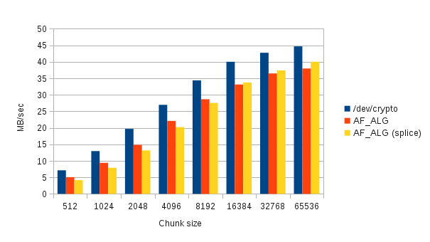
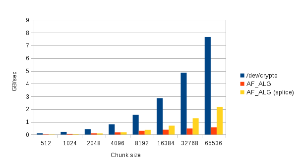
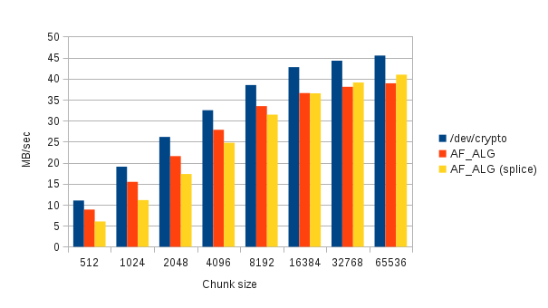
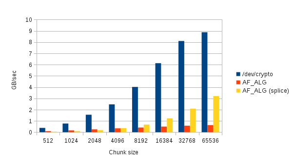

In this page we present a comparison of the Linux port of /dev/crypto against the Linux kernel AF_ALG API under Linux kernel 3.0.0. The benchmarks used for /dev/crypto are included in our source repository and the benchmark for AF_ALG is also available. The benchmark checked the throughput of each interface on requests for encryption using AES and the NULL cipher on different chunk sizes. We performed the test on a desktop system with the NULL cipher to demonstrate the performance on a high throughput hardware-optimized cipher, and to an embedded system with the CESA engine. It showed that AF_ALG's performance is poor on small chunk sizes. Note that real-world protocols such as TLS use chunk sizes of less than 16kB. We also included a benchmark of the AF_ALG usage with the splice() system call. This interface, however, is limited to page-aligned data.
The following tests benchmark the speed of initialization, encryption and deinitialization of the cipher.
|  |  |
Throughput of the cbc(aes) cipher (CESA) |
Throughput of the ecb(cipher-null) cipher |
The following benchmarks show the speed of encryption of the cipher. This does not include the initialization phase of the cipher (key expansion), but only the time spent for encryption.
|  |  |
Throughput of the cbc(aes) cipher (CESA) |
Throughput of the ecb(cipher-null) cipher |
| Updated: Date: 2011-09-05 14:16:05 |